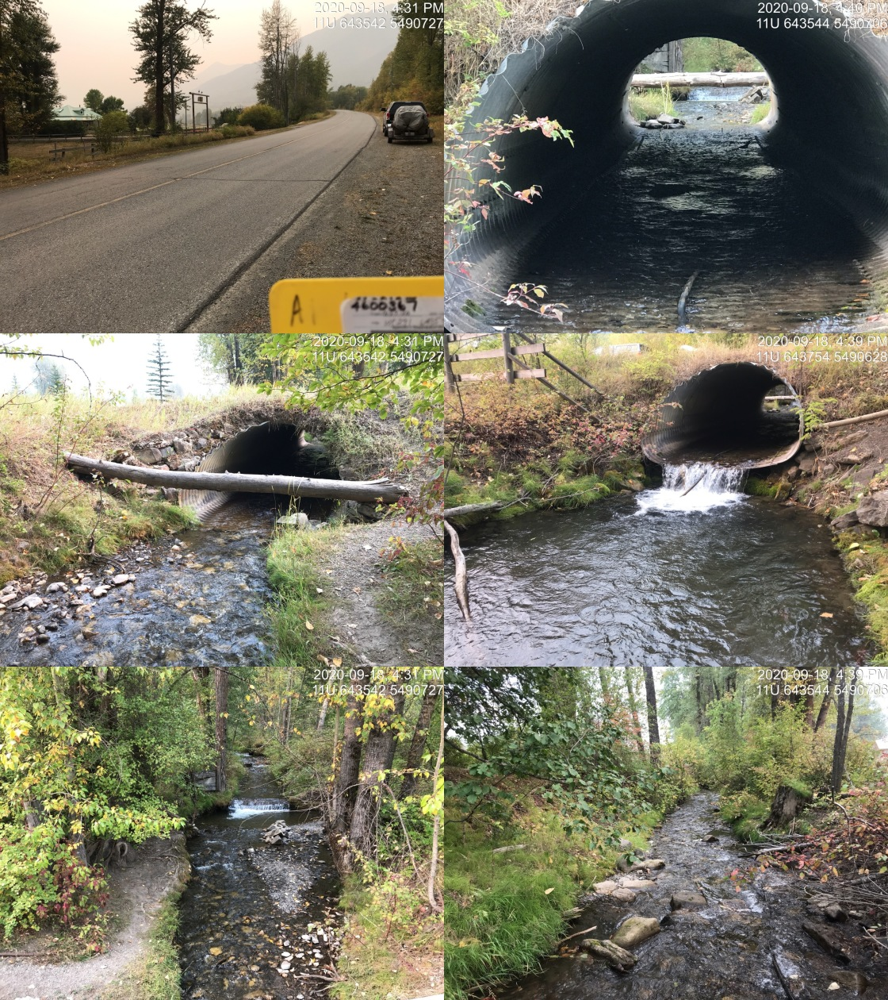

Appendix - Crossing 197542
Dicken Road - Hartley Creek
Site Location
Crossing 197542 is located on a Hartley Creek, approximately 400m upstream from the confluence with the Elk River. The crossing is located on Dicken Road just north of Fernie. Dicken Road is a paved Ministry of Transportation and Infrastructure collector road accessing semi-rural residential and recreational areas.
Background
At the crossing location, the stream is fourth order with a watershed area upstream of the road of approximately 17.1 km2. The elevation of the watershed ranges from a maximum of 2350 to 1030m at the culvert. The system is headed by the 1.6ha Hartley Lake. Although, there are several modelled crossings on the mainstem of Hartley Creek upstream of the crossing, 2020 surveys indicated they were either not present (4603296, 24732660) or bridges (4606518). PSCIS crossing 197582 is an open bottomed structure located under Highway 3 approximately 400m downstream of Dicken Road and was considered passable.
During surveys, we spoke with the owner of lands adjacent to crossing 197542 and they noted that the properties both upstream and downstream of the crossing were located within an area used historically as a log sort and that Hartley Creek was used to transport logs at that time. The landowner also reported that within the last ten years there was a dam failure upstream near Hartley Lake that resulted in significant debris flows throughout the lower reaches of the stream. Aggradation of the channel adjacent to this crossing, reported by Robinson (2008) as likely a result of a low width/depth ratio and unstable banks, has been an ongoing issue requiring repeated dredging to reduce disruptions to traffic flow and high water damage to highway infrastructure. Interior Reforestation Co. Ltd. designed and installed remediation measures in 2006 and 2007 (vortex weir installation, channel armouring, rootwad installation and riparian planting) with the intent to restore the hydraulic conditions necessary to carry transported gravel further downstream and improve fish habitat immediately below the crossing (Robinson 2008). The works were not completely successful in preventing aggradation, as dredging was reported in 2019 (Marlim Ecological Consulting 2019) with only approximately 30cm of headboard observed within the highway stream crossing structure during 2020 surveys.
Westslope cutthroat trout, bull trout and brook trout have been recorded in Hartley Creek upstream of PCSIS 197542 with westslope cutthroat trout, bull trout and mountain whitefish recorded below (MoE 2020b). A radio-tagging study conducted in 2001–2002, identified Hartley Creek as a spawning location of westslope cutthrout trout captured and tagged in the Elk River (Schweigert et al. 2017). In 2012, three pass closed site electrofishing data, including individual fish collection information, sampling effort and site measurements was collected for three sites located within the first 100m upstream of Dicken Road as part of work completed by Lotic Environmental Ltd. (2012) to produce habitat suitability for westslope cutthrout trout in the Upper Elk River. Westslope cutthrout trout were captured at all sites.
PSCIS stream crossing 197542 was ranked as a high priority for follow up with habitat confirmation due to the large amount of potential habitat modelled upstream (13km) including the 1.6ha Hartley Lake. The habitat confirmation was completed on September 18, 2020. A map of the watershed including areas surveyed is provided in Attachment 1 – Map 082G.113.
Stream Characteristics at Crossing
At the time of the survey, the un-embedded and non-backwatered 2.6m diameter oval crossing structure was considered a barrier to upstream fish passage with a pipe length of 20m, a culvert slope of 2%, a stream width ratio of 1.3 and an outlet drop of 0.4m (Table 5.32). Water temperature was 5\(^\circ\)C, pH was 8.6 and conductivity was 526uS/cm.
Stream Characteristics Downstream
The stream was surveyed downstream from the culvert for 940m to the confluence with the Elk River including the 500m below PSCIS crossing 197582. Within the 400m section between Dicken Road and Highway 3, total cover amount was rated as moderate with deep pools dominant. Cover was also present as small woody debris and undercut banks (Table 5.33, Figure 5.35). The average channel width was 3.6m, the average wetted width was 2.8m and the average gradient was 1.7%. The dominant substrate was gravels with cobbles subdominant. Although abundant gravels suitable for spawning were present, the Hartley Creek channel appeared anthropogenically straightened in the area surveyed with a notable lack of deep pools and undercut banks. Overall, habitat was rated as medium value providing suitable habitat for resident and fluvial westlope cutthrout trout spawning.
Within the 500m below PSCIS crossing 197582, the first 175m of channel downstream of the culvert was primarily composed of an aggrading gravel channel with widths between 12-15m. Downstream of this initial section was a marsh area impounded by multiple beaver dams containing run sections to 1m deep and fine substrates. Much of the channel surveyed within the lower sections was within the Elk River floodplain. Total cover amount was rated as moderate with overhanging vegetation dominant. Cover was also present as small woody debris, large woody debris, and instream vegetation (Table 5.33, Figures 5.38 - ??). The average channel width was 8.1m, the average wetted width was 6.3m and the average gradient was 1.8%. The dominant substrate was gravels with fines subdominant. Young of the year salmonids were observed upstream of upper most beaver dam. Habitat was rated as medium representing an important migration corridor containing habitat with moderate rearing potential for resident and fluvial salmonids.
Stream Characteristics Upstream
The stream was surveyed immediately upstream from the culvert for 650m with an addition 75m section surveyed upstram approximatley 2.5km upstream. A small dam (0.3m) high is located approximately 5m upstream of Dicken Road and may present an obstruction to upstream fish passage for fry and juvenile salmonids at some flows. Overall, total cover amount was rated as moderate with dominant. Cover was also present as small woody debris, undercut banks, deep pools, and overhanging vegetation (Table 5.33, Figure 5.38). The average channel width was 6.1m, the average wetted width was 3.8m and the average gradient was 3.5%. The dominant substrate was cobbles with gravels subdominant. There were frequent pools formed by small and large woody debris ranging from 0.3 - 0.7m in depth with a debris jam near top of site (11U 643668 5491243) measured at 1.2m in height. Pockets of gravels suitable for resident and fluvial salmonids were present and there were areas of erosion notable on the right bank of the stream.
Within the 75m section of stream surveyed 2.5km upstream of Dicken Road, stream conditions were similiar to those observed downstream with an average channel width of 4.6m and gravel dominated substrate (Figure 5.39). Overall, upstream of PSCIS 197542 was rated as high habitat value, containing habitat with moderate rearing and spawning potential for resident and fluvial salmonids.
Structure Remediation and Cost Estimate
Structure replacement with an open bottomed structure is recommended to provide access to the habitat located upstream of PSCIS crossing 197542. The cost of the work is estimated at $1e+06 for a cost benefit of $7200/linear m and $12600/m2.
Conclusion
There is an estimated 7.2km of mainstem habitat available upstream of crossing 197542 with habitat rated as high value, representing an important migration corridor with moderate rearing and spawning potential for resident and fluvial salmonids. Dicken Road is the responsiblity of the Ministry of Transportation and Infrastructure. We recommend fish collection data from Lotic Environmental Ltd. (2012) be analyzed to calculate baseline fish densities upstream of the crossing in 2012. The crossing was ranked as a high priority for proceeding to design for replacement with an open bottomed structure. The private land adjacent to Hartley Creek in the vicinity of Dicken Road and Highway 3 may represent valuable opportunities for channel and riparian restoration activities as it is located within an area of intensive fish habitat impacts resulting from dredging to protect highway infrastructure as well as other historic land use activities (i.e. log transport and processing).
| Location and Stream Data |
|
Crossing Characteristics | – |
|---|---|---|---|
| Date | 2020-09-18 | Crossing Sub Type | Oval Culvert |
| PSCIS ID | 197542 | Diameter (m) | 2.6 |
| External ID | NA | Length (m) | 20 |
| Crew | AI, KP | Embedded | No |
| UTM Zone | 11 | Depth Embedded (m) | NA |
| Easting | 643534 | Resemble Channel | No |
| Northing | 5490723 | Backwatered | No |
| Stream | Hartley Creek | Percent Backwatered | NA |
| Road | Dicken Road | Fill Depth (m) | 0.4 |
| Road Tenure | MoTi collector | Outlet Drop (m) | 0.4 |
| Channel Width (m) | 3.5 | Outlet Pool Depth (m) | 0.8 |
| Stream Slope (%) | 1 | Inlet Drop | No |
| Beaver Activity | No | Slope (%) | 2 |
| Habitat Value | High | Valley Fill | Deep Fill |
| Photos: From top left clockwise: Road/Site Card, Barrel, Outlet, Downstream, Upstream, Inlet. |
| Site | Location | Length Surveyed (m) | Channel Width (m) | Wetted Width (m) | Pool Depth (m) | Gradient (%) | Total Cover | Habitat Value |
|---|---|---|---|---|---|---|---|---|
| 197542 | Upstream | 725 | 6.1 | 3.8 | 0.5 | 3.5 | moderate | high |
| 197542 | Downstream | 400 | 3.6 | 2.8 | 0.2 | 1.7 | moderate | medium |
| 197582 | Downstream | 540 | 8.1 | 6.3 | 0.5 | 1.8 | moderate | medium |
Figure 5.35: Typical habitat downstream of PSCIS crossing 197542.
Figure 5.36: Typical habitat downstream of PSCIS crossing 197582.
Figure 5.37: PSCIS crossing 197582.

Figure 5.38: Typical habitat upstream of PSCIS crossing 197542.
Figure 5.39: Habitat upstream of PSCIS crossing 197542 approximatley 2.5km.